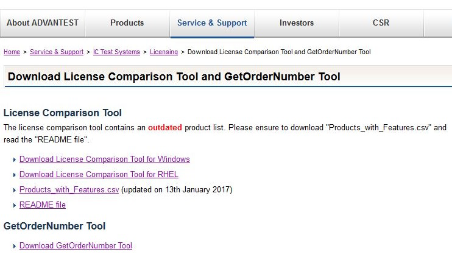
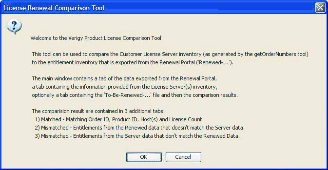

Installing and updating the Comparison Tool
The License Renewal Comparison Tool is written in Java and can be run on a PC running Microsoft Windows, or on a Red Hat Enterprise Linux (RHEL) workstation, including a V93000 system controller or a RHEL workstation serving as a FLEXlm license server.
About this task
The installation and start procedures differ between Microsoft Windows and Red Hat Enterprise Linux (RHEL).
Before you begin
Download the installation files for the Comparison Tool from the Advantest web page as follows:
Go to: www.advantest.com/licensing and click Download License Comparison Tool and GetOrderNumber Tool.
Download the installation package appropriate for your computer operating system. The available packages are:
- MS_Windows_Installation_Package_64bit
- MS_Windows_Installation_Package_32bit
- Linux_Installation_Package_for_RHEL5
-
Note Also download the getOrderNumber tool appropriate for your system controller operating system. You will need this file later. The available tools are:
- getOrderNumbers.rh5.rh7.0.91.1.tar.gz on the web page for the GetOrderNumbers tool 0.91 for RHEL5 and RHEL7.
Also download the updated license product list:
- Products_with_features.csv

You can download the installation files for the Comparison Tool from the Advantest web page:
- Start your Web browser and connect to the Advantest site at www.advantest.com.
- Type your customer credentials and click Login. For registered customers the login name is the email address provided during registration.
- Enter http://www.advantest.com/licensing.
The Licensing page opens.
- Click V93000 SoC / Smart Scale and click Download License Comparison Tool and GetOrderNumber Tool.
- Download the appropriate tool for your operating system and the products_with_features.csv file.
Procedures
Microsoft Windows installation and start
- Execute the RenewalComparison....exe file. The installation wizard appears.
- To complete the installation follow the instructions.
- Save the new Products_with_features.csv file to the following
location:
64 bit:c:\Program Files(x86)\Advantest\Renewal
32 bit:c:\Program Files\Advantest\Renewal
- To start the Comparison Tool on a PC click
The welcome window with further information appears (see below).
RHEL installation and start
- To install the Comparison Tool on RHEL you must have superuser rights.
- Open a Terminal Window and switch user (in a shell, type su -) to superuser (root).
- Change to the directory where you saved the RenewalComparison*.bin file.
- To execute the installation package type, enter the command appropriate for your operating
system, for example:
./RenewalComparison_el7_x86_64.bin
This unpacks the installation wizard and launches it.
- To complete the installation follow the instructions.
- Save the new Products_with_features.csv file to the following
location:
/opt/93000.Renewal/bin
- To close the installation wizard click Done.
- Exit the superuser mode.
- To start the Comparison Tool
type
/opt/93000_Renewal/bin/startComparisonTool
Results
The Comparison Tool starts with the welcome window which provides further information.

What to do next
If you have the files required for a comparison click OK. If not, click Cancel and restart the Comparison Tool once you have the required input files.